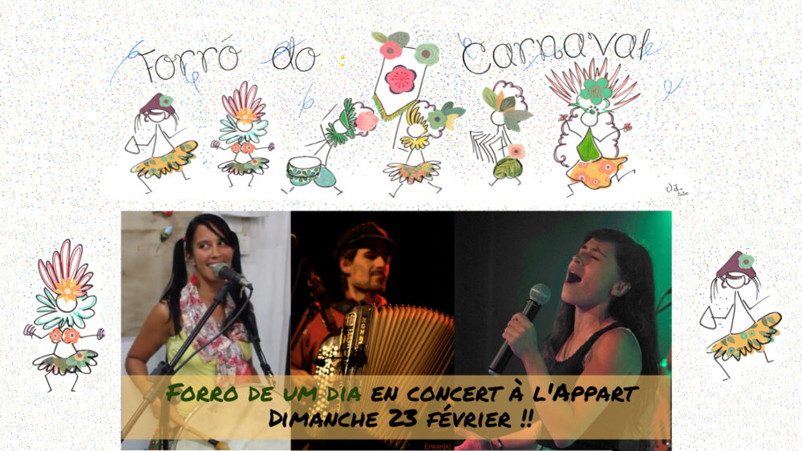

Concert carnavalesque avec Forró De Um Dia

Lieu : L'Appart, Saint-Nazaire
Le groupe Forró de Um Dia pour « pular o carnaval », avec Céline Costa, Manu Mezalma et Tatiana Barros. Thème : paillettes et plumes ! Atelier de danses brésiliennes gratuit de 17h à 18h, concert à 18h30. Participation libre.
Aussi au programme
- 23 février 2020 : Atelier danses brésiliennes avec Tatiana Barros (L'Appart, Saint-Nazaire)